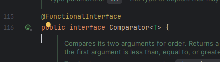

Además de las interfaces que podemos definir nosotros mismos (como en los ejemplos anteriores), Java proporciona varias interfaces funcionales predefinidas entre sus paquete java.util que son muy útiles al trabajar con lambdas, como nuestras conocidas Comparable y Comparator. Estas interfaces son muy utilizadas con lambdas para ordenar colecciones o elementos.
Ejemplo de Comparator usando lambda:
List<String> nombres = Arrays.asList("Juan", "Ana", "Carlos");
Collections.sort(nombres, (a, b) -> a.compareTo(b));
System.out.println(nombres); // Ana, Carlos, Juan
¿Qué pasa internamente?
Este código está utilizando una expresión lambda como segundo parámetro del método Collections.sort. Ese segundo parámetro, como ya sabemos, es un objeto Comparator<T>, una interfaz funcional de Java que se usa para definir un criterio de orden.
Aunque la interfaz Comparator<T> tiene muchos métodos (como thenComparing, reversed, etc.), sólo uno es abstracto: int compare(T o1, T o2). Ese es el único método que debe implementarse, y por eso Comparator es una interfaz funcional (es decir, con un único método abstracto), lo cual permite usar lambdas:

A partir de Java 8+, esa expresión se mejora más todavía y se convierte en:
List<String> nombres = Arrays.asList("Juan", "Ana", "Carlos");
nombres.sort(Comparator.comparing(s -> s));
System.out.println(nombres); // [Ana, Carlos, Juan]Ordenar por varios criterios
Si tuviéramos la clase Persona del ejemplo de objetos, y nos piden que ordenemos por nombre, aplicamos lo mismo que acabamos de ver:
ArrayList<Persona> personas = new ArrayList<>(Arrays.asList(new Persona("Patri",20), new Persona("Juan",45)));
Collections.sort(personas, (p1, p2) -> p1.getNombre().compareTo(p2.getNombre()));
personas.sort(Comparator.comparing(p -> p.getNombre()));pero si quisiéramos ordenar por más atributos, necesitamos otro método añadido: thenComparing
personas.sort(
Comparator.comparing(p -> p.getNombre())
.thenComparing(p -> p.getEdad())
);
// ò
personas.sort(
Comparator.comparing(Persona::getNombre)
.thenComparing(Persona::getEdad)
);